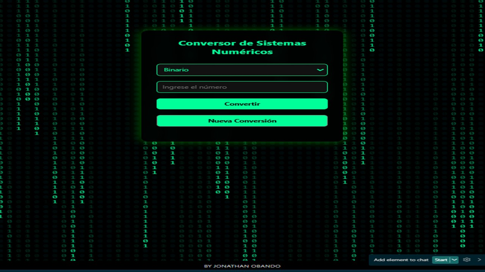

• Desarrollar un sistema que permita convertir números entre diferentes bases numéricas.
• Aplicar conocimientos de JavaScript y manipulación del DOM.
• Comprender el funcionamiento de los sistemas Binario, Decimal, Octal y Hexadecimal.
Se desarrolló una página web interactiva que permite ingresar un número en una base específica y convertirlo automáticamente a las demás bases numéricas. El sistema valida que el número sea correcto antes de realizar la conversión. Además, se implementó un fondo animado tipo efecto "Matrix" utilizando canvas.
• HTML5
• CSS3
• JavaScript
• Canvas API
Se obtiene la base seleccionada y el número ingresado usando getElementById().
let base = parseInt(document.getElementById("baseOrigen").value);
let numero = document.getElementById("numero").value;
• parseInt() convierte el valor a número entero.
• Se almacena el número ingresado en una variable.
let decimal = parseInt(numero, base);
Se usa parseInt(numero, base) para transformar el número ingresado a base decimal.
if (isNaN(decimal)) {
resultadoDiv.innerHTML = "ERROR.";
return;
}
• isNaN() verifica si el resultado no es un número válido.
• Si hay error, se muestra "ERROR".
Decimal: ${decimal}
Binario: ${decimal.toString(2)}
Octal: ${decimal.toString(8)}
Hexadecimal: ${decimal.toString(16).toUpperCase()}
• toString(2) convierte a binario.
• toString(8) convierte a octal.
• toString(16) convierte a hexadecimal.
function nuevaConversion(){
document.getElementById("numero").value = "";
document.getElementById("resultado").innerHTML = "";
}
Permite limpiar el formulario y comenzar una nueva conversión.
---
Se utiliza un elemento <canvas> para dibujar números binarios en movimiento.
const letras = "01"; const fontSize = 18; const columnas = canvas.width / fontSize;
Se generan columnas de números que caen verticalmente simulando el efecto digital.
 ---El proyecto permitió aplicar conceptos de programación web, manipulación del DOM y conversión de sistemas numéricos. Además, se integraron efectos visuales avanzados utilizando canvas, lo que mejora la experiencia del usuario y el diseño profesional del sistema.